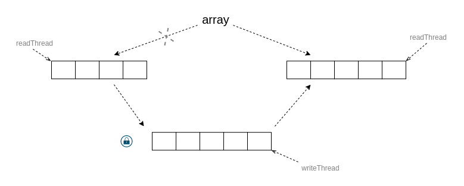

Ch13-Java Collections 之 CopyOnWriteArrayList
March 14, 2020
java.util.concurrent.CopyOnWriteArrayList
CopyOnWriteArrayList 容器允许并发读，读操作是无锁的，性能较高。至于写操作，比如向容器中添加一个元素，则首先将当前容器复制一份，然后在新副本上执行写操作，结束之后再将原容器的引用指向新容器。

1. 添加 #
| 操作 | 操作成功 | 操作失败 |
|---|---|---|
| add | 返回 true |
1.1 add 说明 #
首先获取 lock 对队列进行进行加锁，然后获取当前队列，获取队列长度 len，接着创建新的队列，且长度为 len+1，最后将旧队列中的元素 copy 到新的队列。最后释放 lock。
2. 获取 #
| 操作 | 操作成功 | 操作失败 |
|---|---|---|
| get | 返回元素 |
3. 优缺点分析 #
3.1 优点 #
读操作性能很高，因为无需任何同步措施，比较适用于读多写少的并发场景。Java 的 list 在遍历时，若中途有别的线程对 list 容器进行修改，则会抛出 ConcurrentModificationException 异常。而 CopyOnWriteArrayList 由于其"读写分离"的思想，遍历和修改操作分别作用在不同的 list 容器，所以在使用迭代器进行遍历时候，也就不会抛出 ConcurrentModificationException 异常了
3.2 缺点 #
缺点也很明显，一是内存占用问题，毕竟每次执行写操作都要将原容器拷贝一份，数据量大时，对内存压力较大，可能会引起频繁 GC；二是无法保证实时性，Vector 对于读写操作均加锁同步，可以保证读和写的强一致性。而 CopyOnWriteArrayList 由于其实现策略的原因，写和读分别作用在新老不同容器上，在写操作执行过程中，读不会阻塞但读取到的却是老容器的数据。